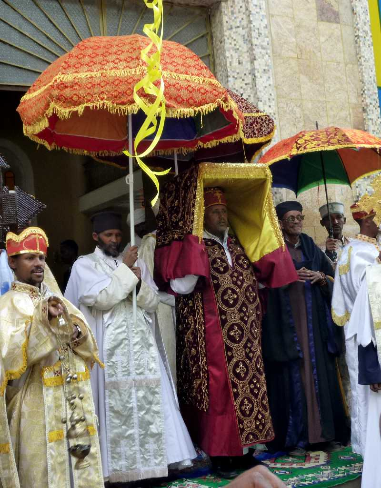

St. Mary Church in Addis Ababa
エチオピア正教の総司教が居る本山 エチオピアで独自に発展しエチオピア帝国時代には国教であった 特徴的な習慣として靴を脱ぐがこれは旧約聖書の出エジプト記とヨシュアン記でその立っている場所が聖なる場所であるため履物を脱ぐようモーゼおよびヨシュアンが神から命ぜられた場面に由来する

Timkat Festival Tabot in St. Mary Church
ティムカット祭の前日に聖マリア教会から十戒が刻まれた石板が入っていると云われるタボットを運び出す様子
キリスト教の十戒 私の他に神があってはならない 偶像をつくってはならない 神の名をみだりに唱えてはならない 安息日を覚えてこれを聖なる日とせよ 父母を敬え 殺してはならない 姦淫してはならない 盗んではならない 隣人について偽証してはならない 隣人の財産をむさぼってはならない